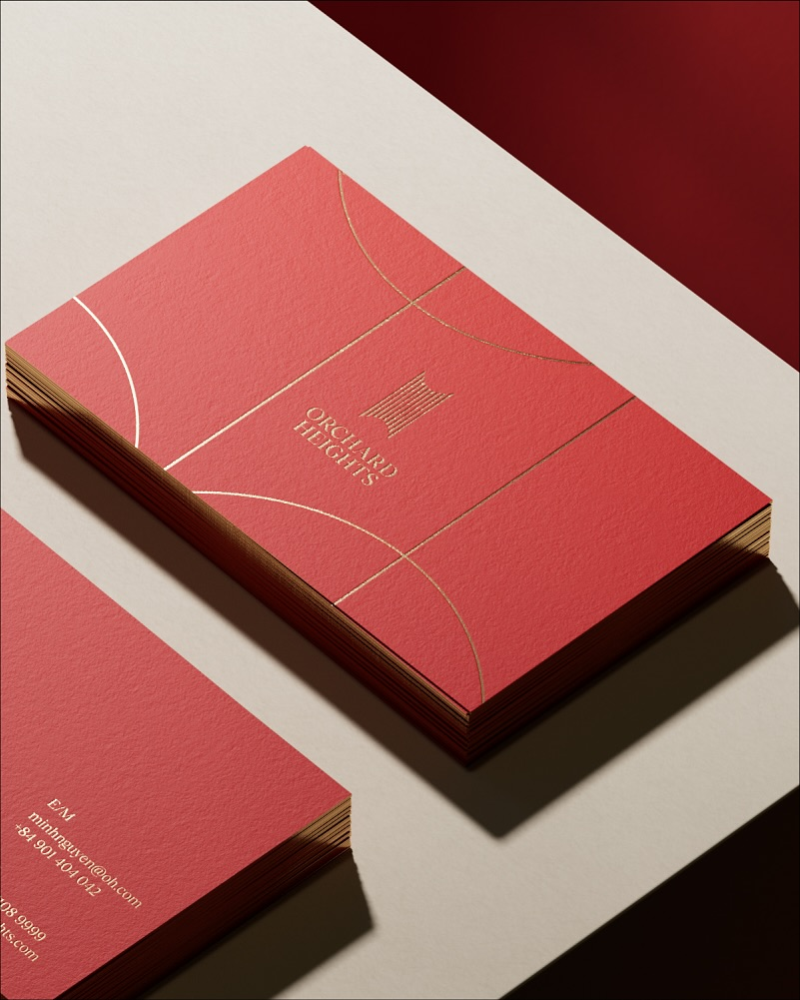

Anh đã có những gì để nói. Chỉ thiếu một người biến nó thành những điểm chạm mà đúng người tự tìm đến.

Anh đăng khi có điều gì đó cần được đặt xuống. Khi một project xong, khi một suy nghĩ cần được ghi lại, khi Line Collective có điều gì đó cần được nhớ. Không có editorial calendar. Không có strategy. Chỉ có những gì thực sự cần nói.
Đó là lý do 478 followers nhưng engagement rate đạt 7.57% - vượt benchmark ngành hơn gấp đôi. Những người follow anh thực sự đọc.
"Thương hiệu sống trong chiếc khay, ly thủy tinh, sticker trên nắp ly, menu trên quầy bar, và cả playlist phát buổi chiều. Đó là những điểm chạm thực - nơi thương hiệu được cảm nhận mỗi ngày."
@bennycreativespace, tháng 9/2025
Mình đọc bài này, rồi đọc bài Inside Our Mind về Orchard Heights, rồi bài về bùn lắng, rồi bài viết cho Nyny. Góc nhìn về branding của anh không thuộc về một agency. Nó thuộc về một người đã sống đủ để hiểu brand là cái gì thật sự.
Vấn đề không phải anh không có gì để nói. Vấn đề là anh nói quá ít so với những gì anh đang nghĩ. Người đúng sẽ không tự tìm đến nếu họ không biết anh đang nghĩ gì.
"Just follow the dream and what we love first. If not can't be a brand consulting, i love to stay as my espresso bar with my guys brew the americano."
@bennycreativespace, tháng 01/2026
Mình ở đây để giúp điều đó xảy ra - không thay đổi cách anh nghĩ, chỉ giúp nhiều người hơn được nghe nó.
478 followers cho một CD đã làm CapitaLand Vietnam + Dentsu là con số quá thấp.
Không phải vì anh chưa hay. Vì anh chưa có hệ thống. Từ 2022 đến 2024, có năm chỉ 1-5 bài cả năm. Engagement rate 7.57% chứng minh audience hiện tại rất gắn bó - nhưng reach gần như bằng không. Những người nên biết đến anh vẫn chưa tìm thấy được anh.
Dữ liệu: 478 followers, ER 7.57%, avg 1.75 bài/thángSeries "Inside Our Mind" là concept tốt nhất trên account - nhưng đang bị bỏ qua.
Anh đã bắt đầu series này - Blanc de Blancs, Orchard Heights, EAZY D. Đây là loại content không ai khác trong ngành creative Việt Nam đang làm ở cấp độ này. Nó không chỉ show output, nó giải thích quá trình tư duy. Nhưng nó xuất hiện quá rải rác để người theo dõi hình thành thói quen chờ đợi bài tiếp theo.
Xem: Blanc de Blancs, EAZY D, Orchard HeightsNgười đọc resonant nhưng không có tín hiệu nào để biết họ nên ở lại.
Khi ai đó đọc bài về Orchard Heights hay về "bùn lắng" và thấy resonant - họ không có nudge nào để biết đây là account đáng follow để tiếp tục nghe cách anh nghĩ. Không có câu nào nói: "nếu bạn thấy quen với cách nhìn này - đây là nơi mình viết thường xuyên hơn." Người đúng đọc xong, thấy hay, rồi đi. Feed không nhắc lại.
7.57% ER nhưng follower count vẫn ở 478 sau nhiều năm hoạt độngKhông phải mình nghĩ ra những chủ đề này. Mình đọc captions của anh và nhận ra: anh đã nói về những thứ này từ trước. Chỉ cần một người biến nó thành hệ thống.
Inside Our Mind
Tư duy đằng sau mỗi dự án. Mỗi project anh làm = 1 bài giải thích quyết định sáng tạo. Anh cung cấp brief + ảnh, mình biến nó thành nội dung. Đây là thứ không ai khác làm được vì nó ở trong đầu anh.
Brand Philosophy
Góc nhìn về branding mà ngành không dạy. Atmosphere vs. logo. Static vs. dynamic. Điểm chạm. Những gì anh tin là thật về cách một brand được sống - biến nó thành nội dung để đúng người tự tìm đến.
Life as Metaphor
Jiu-Jitsu, Aquascape, Đạo gia kết nối với brand thinking. Bài Jiu-Jitsu của anh đạt 6 comments - nhiều nhất trong toàn bộ sample. Đây là loại nội dung không ai copy được vì nó là cuộc sống thật của anh.
Tần suất đề xuất: 30 bài/tháng - xoay vòng 3 pillars. Anh không cần đăng hết 30 bài trong tháng - đây là content library anh rút ra dùng dần. Nhiều bài có thể dùng được sau 6 tháng khi context vẫn còn phù hợp.
Anh cung cấp: voice note hoặc ghi chú ngắn về ý tưởng, brief dự án, ảnh có sẵn. Mình cung cấp: 30 bài content hoàn chỉnh theo đúng giọng của anh, theo đúng 3 pillars, sẵn sàng để đăng - hoặc để dùng lại sau.
Content Engine
Content + Visual
Gói 01
6 triệu
Thanh toán 100% trước khi bắt đầu.
Gói 02
9 triệu
Thanh toán 2 đợt, mỗi đợt 50%: đợt 1 trước khi bắt đầu, đợt 2 trước khi nhận 15 bài tiếp theo.
Đây là bài anh chưa viết, nhưng rõ ràng anh đã sở hữu tất cả nguyên liệu để viết nó. Mình lấy từ ngôn ngữ anh đã dùng trong caption về Pomalo, về Orchard Heights, về "atmosphere" - và xây thành một carousel hoàn chỉnh. Nếu mình slip bài này vào feed của anh, không ai biết đó không phải anh viết.
Caption: "Lưu bài này cho lần bạn giao xong brand guide hoàn chỉnh, bước vào không gian thật, và cảm thấy brand vẫn không ở đó."
Mình viết sample này sau khi đọc 45 bài của anh. Cố ý mirror cách anh viết - nhịp câu, từ quen, cách mở bài, cách kết - để anh thấy mình không áp style của mình lên brand anh. Nếu mình làm việc cùng nhau, mỗi bài trong 30 bài đều đi qua bộ check này trước khi giao anh.
Nếu anh thấy resonant với những gì mình viết ở trên - nhắn tin cho mình trên Instagram.
Nhắn tin cho mình